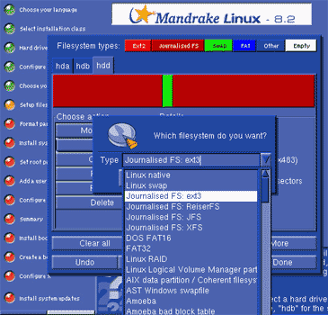

За что мы его любим?
Автор: Алексей Федорчук,
[email protected]Опубликовано:
27.05.2002
Оригинал: http://www.softterra.ru/freeos/18093/
Под «ним» я подразумеваю Mandrake. Имя это в
последнее время было на слуху, причем не в самом благоприятном контексте. А
именно — в связи с политикой компании в отношении клуба пользователей.
Речь идет, в частности, о решении предоставить пакет StarOffice 6.0 только так
называемым «серебряным» (и выше) членам клуба, оставив не у дел около двух
третей представителей Mandrake Club, которые платят меньшие взносы. Хотя
поначалу утверждалось, что «члены клуба всех уровней будут пользоваться одними и
теми же привилегиями».
Я, честно говоря, причин народного возмущения не
понял, да особо и не вникал — за неактуальностью для отечественного
пользователя. Конечно, размер ежемесячного членского взноса в пять тех самых
пресловутых единиц не столь уж обременительна для бюджета постсоветских
трудящихся. Но, вероятно, большинство из них способны найти ей и иное
применение — тем более, что членство, на мой взгляд, мало что дает,
если не считать морального удовлетворения в духе «эй, мужик, третьим
ко-спонсором будешь?».
Поэтому выход очередной версии
дистрибутива — Linux Mandrake 8.2 — оказался весьма кстати,
позволив отвлечься от обсуждения риторического вопроса, должны ли платящие пять
баксов иметь равные права с внесшими десять их же, или все-таки кто платит
больше, тот и «равнее».
Дистрибутив Mandrake в открытом доступе
по-прежнему представляет собой три CD-диска [1], из которых с
первого (а только он и необходим для установки системы) можно загрузиться. После
чего автоматически в графическом режиме запускается программа инсталляции.
В текущей версии разработчики отказались от
возможности выбора цветовой гаммы — установка проходит в неброских
серовато-голубых тонах. Впрочем, дальше существенных изменений не наблюдается:
выбор языка из огромного списка, в том числе русского в вариантах KOI и CP1251,
знакомство с лицензией, определение с режимом
установки — рекомендуемым или экспертным (в дальнейшем между ними
можно переключаться на лету). Кроме того, в окнах установки постоянно мелькает
кнопка «Продвинутый», дающая доступ к дополнительным настройкам.

Рисунок 1. Инсталляция
Первая неожиданность обнаружилась на стадии
разбиения диска. Сначала появилось сообщение о невозможности прочитать таблицу
разделов, и мне было предложено действовать на свой страх и риск. Как
выяснилось, программа установки не смогла опознать слайс FreeBSD на первом из
моих дисков, и это при том, что раздел NetBSD на втором диске определился
правильно [2]. Тем не менее,
создавать разделы на втором диске система согласилась.
Как и раньше, разделы создаются легко и просто.
Единственное отличие — то, что в качестве файловой системы по
умолчанию упорно предлагается ext3fs. Я с ней дела раньше не имел, но все же
решил попробовать. Оказалось — ни малейшего вреда. Вплоть до того, что
ext3-раздел успешно монтируется во FreeBSD стандартной командой
mount_ext2 — в отношении файловой системы Reiser она это делать
наотрез отказывалась.
Вообще, установочная программа Mandrake
позволяет создавать разделы для множества файловых систем (рис.1). В списке
доступных, кроме ext2fs, все варианты журналируемых систем (упомянутая ext3fs,
ReiserFs, классическая JFS и XFS), программный RAID, системы Net- и OpenBSD (а
вот FreeBSD опять же не обнаруживается), FAT'ы любого рода, а также масса всякой
экзотики, о которой мне даже слышать не доводилось. Что, конечно, не означает,
будто потом с ними сразу можно работать — форматировать «чуждые»
системы типа FAT Mandrake отнюдь не намерен.
В свойствах каждого создаваемого раздела
появилась новая опция — «Параметры». Здесь можно задать дисковые
квоты, криптографию, определить раздел как read only (ro) и т.д. Ну, а дюже
"продвинутый" юзер перед форматированием может указать, какие разделы проверять
на предмет испорченных блоков.
Процедура выбора пакетов не
изменилась — можно задать установку офисной, мультимедийной, игровой,
научной станции, ftp- или web-сервера, сервера базы данных... Или любые их
сочетания, хоть все сразу. Обращу внимание только на то, что никакому, даже
«обычному», пользователю не следует отказываться от установки набора
разработчика — иначе вы не сможете собрать даже простейшую программу.
Далее вам предоставляется возможность
индивидуального выбора пакетов. В своей заметке о предыдущей версии («Linux для
гедонистов») я писал, что Mandrake наконец-то излечился от своей
наследственной болезни — ошибок контроля зависимостей. Однако, в
полном соответствии с законом Паркинсона, оказалось, что я просто чего-то
недоглядел: в нынешней версии излишнее увлечение включением/вычеркиванием
пакетов в индивидуальном порядке по-прежнему не приводит ни к чему
хорошему — хотя контроль зависимостей, вроде бы, включен по умолчанию.
У меня, в частности, отказались с первого раза устанавливаться X'ы, что
сопровождалось сообщением об отсутствии какого-то
Gtk-компонента — видимо, я его сгоряча истребил, а автоматический
контроль зависимостей таки не сработал.
К слову сказать, при настройке системы X Window
тоже обнаруживается недоработка: ошибка в этом процессе приводит к зацикливанию
и невозможности двигаться дальше. Приходится перегружаться и начинать все
сначала — хотя почти наверняка проблему можно было бы исправить потом,
ручной правкой XF86Config.
Вот, пожалуй, и все новшества инсталляции. Уже
начиная с момента выбора языка по нажатию клавиш Alt+Control+F2 доступна вторая
текстовая консоль с неким облегченным shell'ом, что позволяет использовать
дистрибутивный комплект для целей аварийного восстановления. Не сказал бы, что
это очень удачный вариант: в нем по умолчанию не доступен даже редактор vi. А
запустить его с подмонтированного раздела винчестера оказалось не самой
элементарной задачей — он скрывается глубоко под ворохом
последовательных символических ссылок.
Кратко резюмирую свои впечатления от установки.
Принципиальных изменений в ней не произошло, а проблема с выбором пакетов из
разряда «багов» перешла в категорию «фичь»: без нее и Mandrake — не
Mandrake, подобно нижней губе Габсбургов. Так за что же мы его все-таки
любим?
Да, Mandrake ни в какой из своих версий не
свободен от недостатков и ошибок. Более того, одни ошибки в нем кочуют из версии
к версии, а другие, исчезая, заменяются новыми — столь же мелкими,
неприятными и оставляющими впечатление простой неаккуратности. НО: каждая версия
неизменно включает все последние достижения открытого софтостроения. В ней
всегда можно обнаружить самые новые версии ядра, компиляторов, системных
библиотек, X'ов и графических сред.
И неизменно — прекрасный набор
настольных приложений, обычно работающих сразу «из коробки» или после
минимальной доводки. В одних случаях это будет подборка графических редакторов,
в других — средства «граббления» аудио-дисков и MPEG-кодирования, в
третьих — еще что-нибудь новенькое. В обсуждаемой версии 8.2 мое
внимание привлекли видеоприложения. Из них аж три утилиты предназначены для
просмотра телепрограмм — KWinTV, XavTV и Zapping. Правда, с ходу ни
одну из них мне наладить не удалось, но это исключительно издержки
географического положения и качества антенны. Плюс безупречно работающая
программа просмотра VideoCD/DVD, запустившаяся с полпинка.
А потому, уж простите за патетику, я
рассматриваю Mandrake именно как пример блестящей демонстрации возможностей Open
Sources вообще. Причем именно в тех областях, где позиции его считаются
традиционно слабыми — в графике и мультимедиа для домашнего (сиречь
любительского) использования. Похоже, что разработчики в своем увлечении
креативом и не задаются целью превратить систему в «закаленное и отточенное
орудие» для какой-либо прагматической деятельности. Достойно поддерживая тем
самым исконно романтическую традицию графа Роланда, сеньора де Байяра и
королевских мушкетеров — в конце концов, не всем же думать об офисных
пакетах или системах аккаунтинга для «теток-бухгалтерш»…
Вниманию вебмастеров: использование данной статьи возможно
только в соответствии
с правилами использования
материалов сайта «Софтерра»
(http://www.softerra.ru/site/rules/)